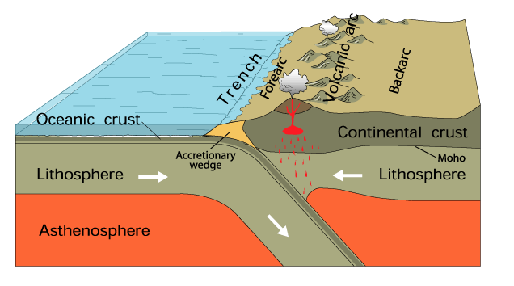

Contrary to popular belief (refer to geosyncline), Japan has mostly not been an island chain. In fact, Japan only recently split off from the Eurasian continent about 15 million years ago. Japan sits on several plates. including the Pacific, Philippine, Eurasian, and North American plates. Thus, the area is prone to earthquakes and volcanic activity. As a result, it comes to no suprise that the area is subjuct to subduction.
Subduction is when one plate moves under another plate and is pushed into the mantle. When this occurs, a deep-sea trench is formed, trapping in sediments. We normally think about subduction as land and sediments being recycled. In Japan's case, however, rather than the sediments being dragged down with the land, they get thrusted onto the continental edge. With the properties of subduction, Japan formed through accretion and magmatism.
Accretion is a process that results in the addition of material from the subduction trench to the continental edge. In Japan's case, volumes of sediments are eroded from the Eurasian continent into the subduction trenches and bulldozed back onto the continential shelf. Overtime, this forms an accretionary wedge, a series overlapping strata. The accretionary wedge contributed to the growth of the Eurasian continent in the last 450 million years.
Japan demonstrates this feature by the following evidence:
For accretion to occur, it requires the subducting trenches to require a sufficient amount of eroded sediments. Additionally, accretion can occur at different rates depending on how much inland erosion occurred. The accretionary complex composes of the following:
As a result, this makes Japan's geology extremely complex.
As a byproduct of accretion, the uplift stimulates volcanic activity. This creates continental crust through granitic and volcanic emplacement. Overtime, the igneous rocks erode and are fed into the trench, giving off to accretion.